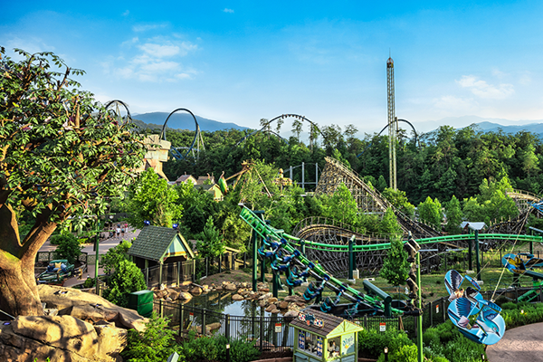
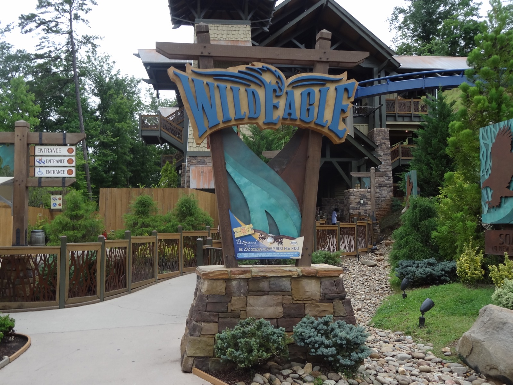
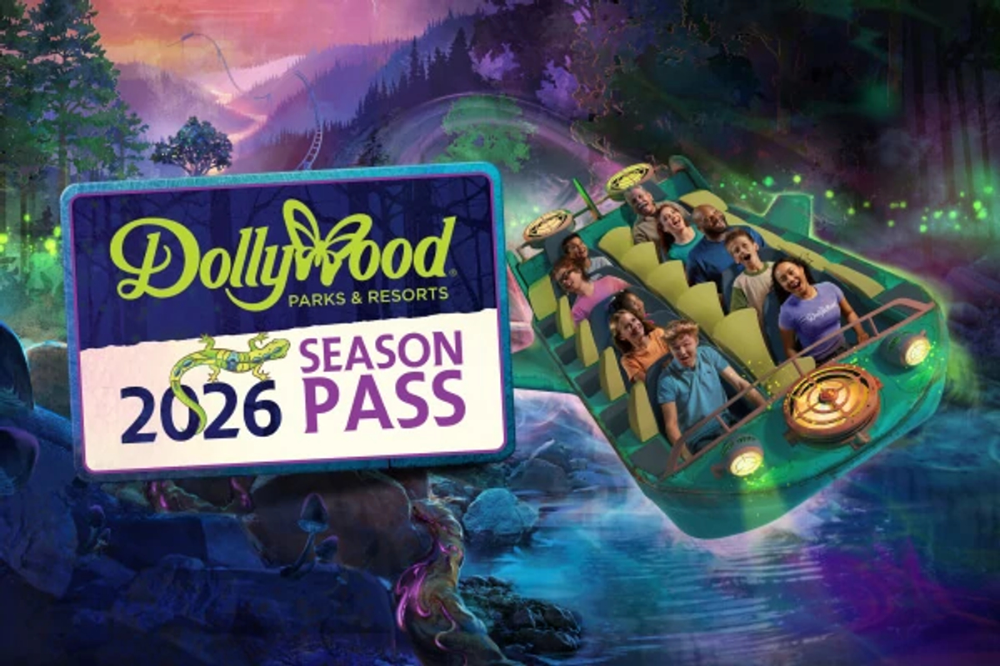

Spring
I Will Always Love You Festival
Dollywood lists this 2026 spring festival from March 13 through April 12. It is a strong choice for music, shows, and cooler park weather before the heavier summer travel season.
Dollywood Trip Planning
Outdoor Resorts Gatlinburg gives families a quieter East Parkway base for Dollywood days, with a practical route toward the Craftsman's Valley side that can avoid the worst Parkway traffic getting in and out of the park.

Why Stay Here
Dollywood days are better when you do not spend the first and last hour sitting in the same traffic as everyone else. Staying at Outdoor Resorts Gatlinburg gives your group room to spread out, cook simple meals, use the pools and playgrounds, and approach Dollywood from the East Parkway side instead of defaulting to the busiest Pigeon Forge corridors.
Local Route Strategy
From ORG, the route that often makes the most sense is not the obvious tourist route through downtown Gatlinburg, Pigeon Forge, and the main Parkway. On busy days, look at the back-side approach that runs from the East Parkway side through the Birds Creek and Upper Middle Creek area toward Veterans Boulevard and the Craftsman's Valley side of Dollywood.
The point is not that the back route is always shorter on a map. The point is that it can keep you out of the traffic stack that builds around the Parkway, Dollywood Lane, and the main Pigeon Forge flow when everyone is arriving or leaving at the same time.

2026 Park Calendar
Dollywood's 2026 theme park season opened March 13, and the park calendar changes by festival, weekday, and season. Before you pick dates, check the official hours calendar and match your ORG stay to the kind of park day you actually want.
Spring
Dollywood lists this 2026 spring festival from March 13 through April 12. It is a strong choice for music, shows, and cooler park weather before the heavier summer travel season.
Summer and fall
Summer, fall break, and festival weekends are when route choice matters most. Check park hours, show schedules, and live traffic before leaving the resort.
Christmas
Dollywood's Christmas season is one of the biggest draws of the year. Expect evening traffic to behave differently because many guests arrive later and leave after the lights.

New in 2026
Dollywood's new 2026 attraction, NightFlight Expedition, is opening in Wildwood Grove as the park's largest attraction investment. Dollywood describes it as the world's first indoor family hybrid coaster and whitewater river raft ride.
The ride is built inside a 44,000-square-foot, temperature-controlled building and is planned as a 5 1/2-minute Smoky Mountain adventure with flight, water, coaster, and boat elements. Translation for families: this is likely to be the headline ride people ask about in 2026, especially on weather-questionable days when an indoor anchor matters.
Tickets
For tickets, passes, TimeSaver, parking, and current offers, use Dollywood's official ticket pages. Prices and ticket types change by date, season, and promotion, so the official site should be the source of truth.
Date-specific
Use these when your park day is locked in. Dollywood notes that savings vary by day, so compare your exact date before buying.
View Dollywood tickets →Flexible
These cost more but can make sense if weather, tournament schedules, or family plans might move your Dollywood day.
Compare ticket types →Multiple visits
If you are planning multiple Dollywood days, Splash Country, or a return trip, compare passes, TimeSaver, parking, and current offers before booking.
See season passes →Questions
On busy days, compare the normal Parkway route with the back route from the East Parkway side through the Birds Creek and Upper Middle Creek area toward Veterans Boulevard and the Craftsman's Valley side of Dollywood. Check live maps before you leave, because mountain traffic changes fast.
Yes. It is not a hotel, but it can work well for families who want RV resort space, outdoor areas, and a quieter home base after theme park time.
Yes. The rentals page includes ready-to-stay RV and park model listings as they are verified, plus rentable RV lots for guests bringing their own camper.
No. Outdoor Resorts Gatlinburg is focused on RV camping, RV rentals, park models, and rentable RV lots. Tent camping is not offered.
Avoid the biggest traffic windows when you can, and do not blindly follow the main Parkway approach if it is already backed up. From ORG, the back way toward Dollywood can be useful because it avoids downtown Gatlinburg and much of the Pigeon Forge strip.